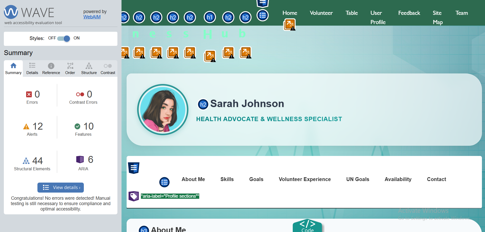
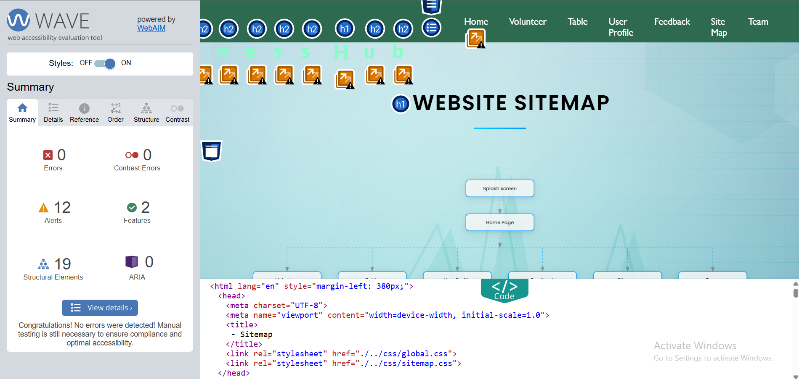
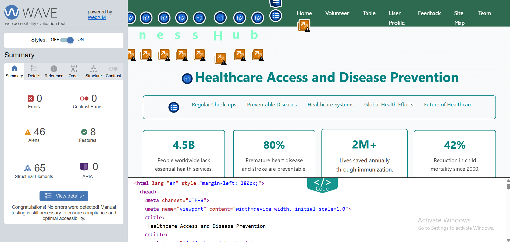

W
e
l
l
n
e
s
s
H
u
b
Home
Volunteer
Table
User Profile
Feedback
Site Map
Team
Replace the header with your teams' website header
Aloka Wickramanayake - Student 4
User Profile Page validation report

Back to Page Editor page
Page Editor - User Profile.
Sitemap Page validation report

Back to Page Editor page
Page Editor - Sitemap.
Content Page validation report

Back to Page Editor page
Page Editor - Content.
Go top